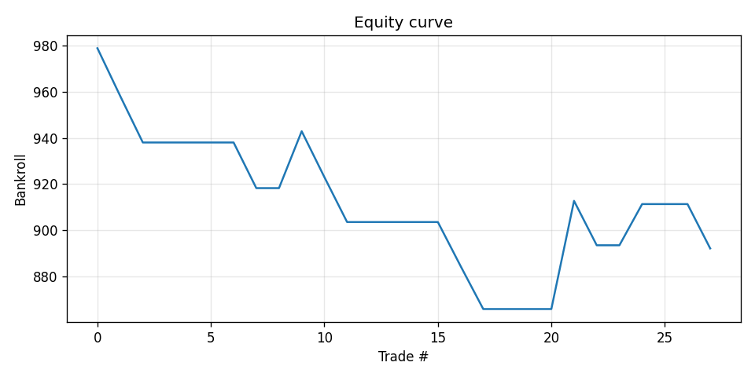
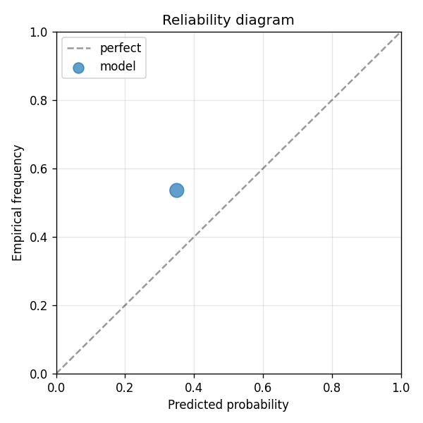

V3: v2's same football_data features (now enriched from 9 -> 27 raw stats per match) PLUS agent-scraped news text fed into Voyage AI embeddings (voyage-3-large, 1024-dim per article, top-of-MTEB), pooled into per-topic slot ranges of the state vector. Schema rationale (hand-designed 2026-05-15; codex propose-schema unavailable due to daily usage cap on the codex subscription; will revisit when quota resets): - 27 raw football_data numerics get 240 slots in form_numeric (one slot per series, 183 slots of headroom for future enrichment) - market_state gets 96 slots (3 closing-odds series x 4 lags = 12 features, plenty of headroom) - 3 text blocks (lineups, injuries, manager) each get 224 slots, fed by Voyage voyage-3-large embeddings. With only ~24 articles scraped, most events return zeros, but the small fraction with articles get full-fidelity 1024-dim embeddings truncated to 224 slots. - agent_feature_extractor block was DROPPED for v3 (codex extraction failed to produce real values; was emitting all 0.0 across the schema). Will revisit when codex quota frees up and a real extractor pass completes. v1 GBDT result: -7.91% net return, Brier improvement -0.16. v2 transformer same features: -10.79% net return, Brier improvement -0.04. v3 thesis: Voyage-quality embeddings + enriched football_data should move Brier improvement closer to (or past) zero. Net return depends on whether the extra signal clears the 5% commission + 50bps slippage + 150bps safety margin threshold.
| metric | value |
|---|---|
| brier_model | 0.28437326718357747 |
| brier_market | 0.2451664420506288 |
| brier_improvement | -0.03920682513294868 |
| accuracy_model | 0.4642857142857143 |
| accuracy_market | 0.4642857142857143 |
| n_events | 28 |
| n_trades | 13 |
| hit_rate | 0.23076923076923078 |
| gross_return | -0.1079198141321881 |
| net_return | -0.1079198141321881 |
| sharpe | -1.3241353940370686 |
| max_drawdown | -0.13419575410826304 |
| label_shuffle_brier_improvement | null |

